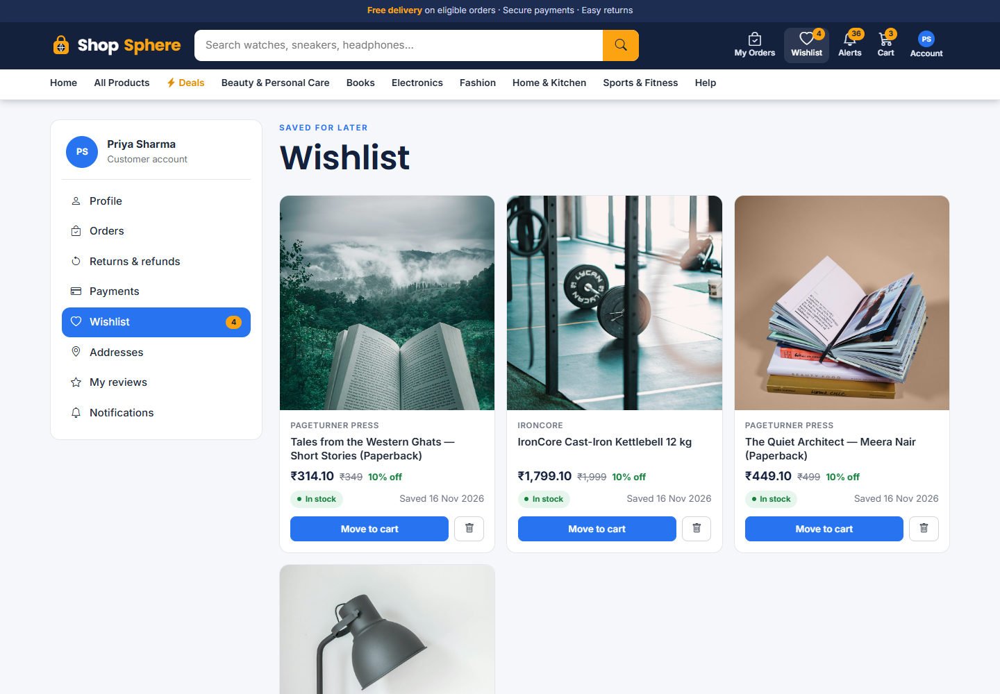
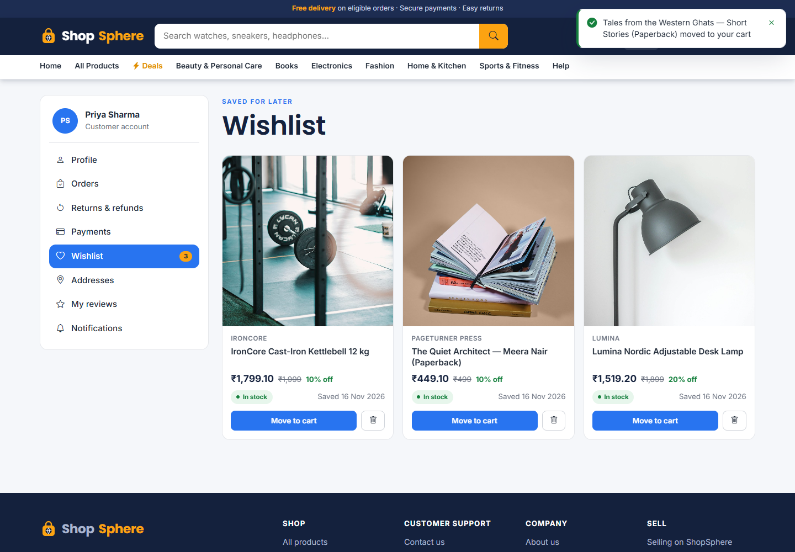
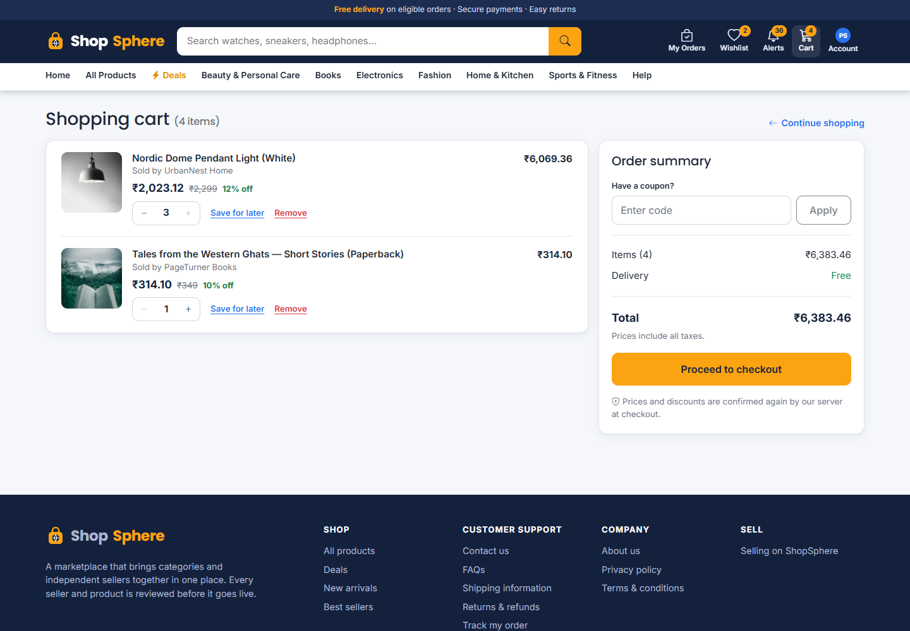
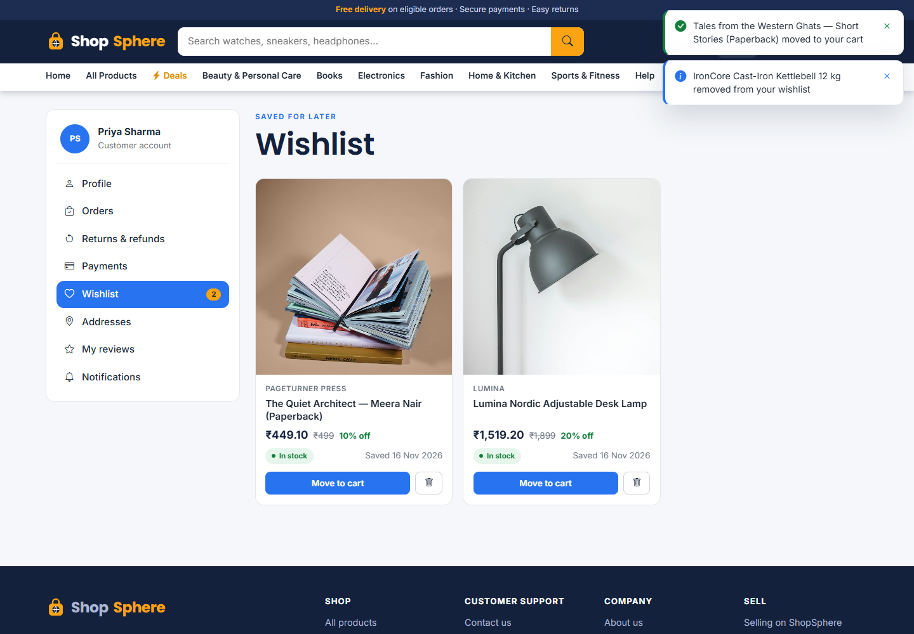

| Item | Details |
|---|---|
| Candidate | Anil Nayak |
| Internship | ITVedant / Vibgyor Advisors integrated internship |
| Project / Module | ShopSphere — Wishlist Management (customer account) |
| Stack | React 19 + Vite · Java 17, Spring Boot 4, JWT · MySQL (ecommerce_intern, table wishlist_items) |
Repository: https://github.com/anilnayak9969-cmd/ShopSphere
Module code: WishlistServiceImpl, CartServiceImpl.moveFromWishlist (move to cart in one transaction), CustomerAccountController (wishlist endpoints), WishlistItem, WishlistItemResponse; frontend WishlistButton.jsx, context/WishlistContext.jsx, pages/customer/Wishlist.jsx; SQL in DataBase/queries.sql section 12; this document in Docs/WishlistManagement.
Website: https://host-shop-sphere.vercel.app/ — sign in as a customer and open Wishlist in the header.
The wishlist already existed in ShopSphere; the items marked ADDED were built for this assignment.
| Requirement | How ShopSphere implements it | Status |
|---|---|---|
| 1. Add to wishlist from the product page | Save to wishlist (heart) on the product page and on every product card. Only products on sale can be saved; a product is saved once (unique per customer); up to 100 items. | Implemented |
| 2. View wishlist: name, price, availability | Account → Wishlist: photo, brand, product name, price with discount, an availability status badge (In stock / Only N left / Out of stock / No longer available) ADDED and the date saved ADDED. | Implemented |
| 3. Remove from wishlist | The bin button on each item, or tapping the heart again anywhere on the site. | Implemented |
| 4. Move from wishlist to cart | Move to cart adds one unit to the cart (stock checked) and removes it from the wishlist. This is now a single server step, POST /customer/wishlist/{id}/move-to-cart, so it either fully succeeds or nothing changes ADDED. The cart page also offers Save for later (cart → wishlist). | Implemented |
Database design: table wishlists | Table wishlist_items with all columns; updated_at ADDED. See Appendix A. | Implemented |
The wishlist lets a customer keep products they like but are not ready to buy, see whether they are still in stock, and move them into the cart when ready. It is saved on the server, so it follows the customer to any device.
Click Wishlist in the header (or Account → Wishlist). Each saved product shows its photo, brand, name, current price and discount, availability and the date it was saved, with Move to cart and a remove (bin) button.
| Availability badge | Meaning |
|---|---|
| In stock | More than 5 units available |
| Only N left | 5 or fewer units — buy soon |
| Out of stock | None left; Move to cart is disabled |
| No longer available | The product was taken off sale; it can only be removed |



Click the bin button on the product (or tap its heart anywhere on the site). It disappears and a message confirms it.

| Situation | Result |
|---|---|
| Saving a product that is not on sale | This product is not available. |
| Saving the same product twice | Ignored — it is kept once |
| More than 100 saved products | Your wishlist can hold up to 100 items. |
| Move to cart without enough stock / over 10 units | … is out of stock. / You can buy at most 10 units …; the wishlist is unchanged |
| Wishlist used by a non-customer | HTTP 403 — only customers have a wishlist |
Figures 1–5 were taken from the application running locally (React on localhost:5173, Spring Boot on localhost:8080, MySQL ecommerce_intern) with the demo customer Priya Sharma.
| Assignment column | Assignment type | ShopSphere column (wishlist_items) | Meaning |
|---|---|---|---|
| wishlist_id | int (pk, auto_increment) | wishlist_item_id BIGINT PK | Unique identifier for each saved product |
| customer_id | int (fk) | user_id BIGINT FK → users | The customer |
| product_id | int (fk) | product_id BIGINT FK → products | The saved product; (user_id, product_id) is unique |
| created_at | datetime | created_at DATETIME(6) | When the product was added |
| updated_at | datetime | updated_at DATETIME(6) | When the entry was last updated |
ShopSphere stores one row per saved product (a customer's wishlist is all their rows), which is the same data as the assignment's wishlists table.
-- Add (kept once per customer) INSERT IGNORE INTO wishlist_items (user_id, product_id, created_at, updated_at) VALUES (8, 62, NOW(6), NOW(6)); -- View with availability SELECT p.product_name, p.selling_price, CASE WHEN p.active = b'0' THEN 'No longer available' WHEN p.stock_quantity = 0 THEN 'Out of stock' WHEN p.stock_quantity <= 5 THEN CONCAT('Only ', p.stock_quantity, ' left') ELSE 'In stock' END AS availability FROM wishlist_items w JOIN products p ON p.product_id = w.product_id WHERE w.user_id = 8; -- Remove DELETE FROM wishlist_items WHERE user_id = 8 AND product_id = 62; -- Move to cart (one transaction): add to cart_items if in stock, then delete from wishlist_items
| Method | Path | Purpose |
|---|---|---|
| GET | /customer/wishlist | View the wishlist with availability |
| POST | /customer/wishlist/{productId} | Add a product |
| DELETE | /customer/wishlist/{productId} | Remove a product |
| POST | /customer/wishlist/{productId}/move-to-cart | Move to cart in one step |
| POST | /customer/cart/items/{id}/save-for-later | Cart → wishlist |
Unit tests — WishlistManagementTest, 10 tests, all passing: adding a product that is on sale saves it and adding it twice keeps one entry; products not on sale are refused; the wishlist holds at most 100 products; the view shows name, price and the four availability states; remove deletes the entry and removing something not saved is harmless; move to cart adds 1 unit and removes it from the wishlist; an out-of-stock move fails and leaves the wishlist unchanged; moving a product that is not saved is refused. The full backend suite (107 tests) passes.
End-to-end checks against the running application, 11 checks, all passing:
| Check | Result |
|---|---|
| Add a product / add it twice | Saved once |
| Add an unknown product | 404 — This product is not available. |
| View: name, price, availability | Monsoon Letters — ₹339.15 — "In stock" |
| Out-of-stock product | Shown as "Out of stock" |
| Move an out-of-stock product to the cart | 409 — … is out of stock.; wishlist unchanged |
| Move a product that is not saved | 404 — That product is not in your wishlist. |
| Move to cart | 1 unit in the cart, removed from the wishlist |
| Remove | Removed |
| Seller / signed-out user | 403 / 401 |